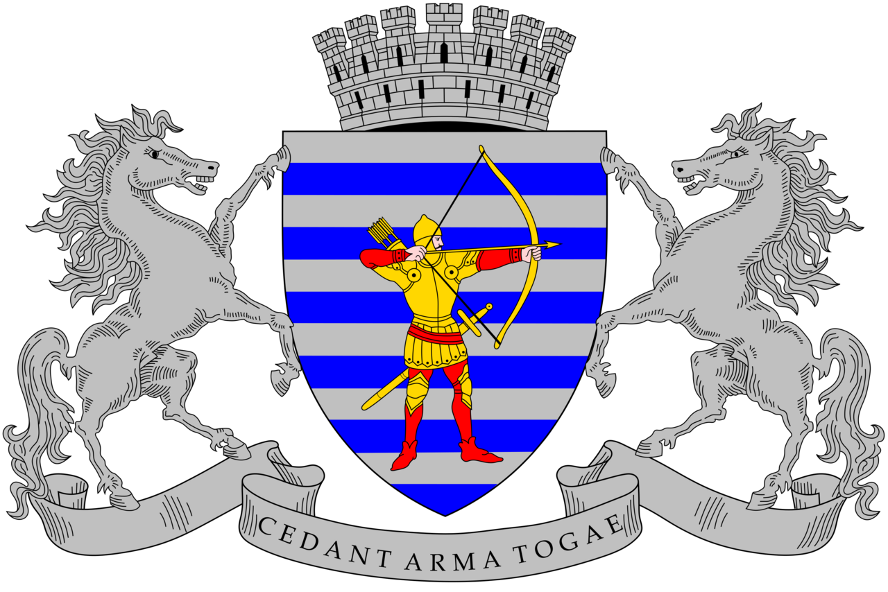

Для интерактивных элементов сайта включите JavaScript в браузере.

Гид по Бельцам
Главная
О городе
Места
Инфо и медиа
Контакты
Бельцы - город, открытый для образования, культуры и гостей
Смотреть подробную информацию
О городе
Локальное время (JavaScript):
--:--